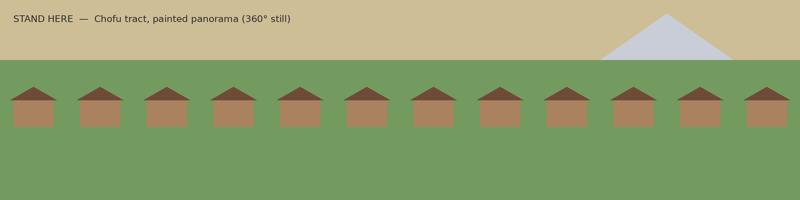

Internal review only. Not publication, not launch. LIFF app “Rising Together”, ID 2012800911-7BPP3dHp, on channel 2012800911, endpoint https://chwillpcs-task.github.io/rising-together/ — device test in LINE's real WebView still untested. Four episodes: Chofu, Yokosuka, Tachikawa, Tama.
Register:Imagined, to be witnessed and experienced by everyone
Episode:
External-browser fallback.
You are opening this app in a regular browser, not the LIFF browser.
No LIFF features are available here. Talk-back, sharing, and returning to chat need LINE — open this app from the TASK chat in LINE. This banner hides itself when the app detects it is inside LINE.
You appear to be offline.
This app has no offline mode — LIFF does not support Service Workers.
The still images and text below remain readable; the video will not load until you are back online.
No infinite spinner is used.
Episode 1 · Chofu field — one 2.5D scene
Scroll to zoom. Drag to pan. Drift is slow, with no clock and no score.
The field is a painted reconstruction. The exact spot of the old field inside today’s stadium area is not established — school, housing, airfield and stadium share the same returned 203.6-hectare tract.
▲ Mt. Fuji, from the Chofu breezeway — as described in the first yearbook
1971 — CHOFU · warm, faded past
Beat 1 of 5 — The field
Scroll down to zoom: field → housing → stadium → Japan ↓
1 · The field — “Imagined, to be witnessed and experienced by everyone”
Chofu High School opened 1963 and closed 1974, in the Kanto Mura Housing Annex. The field here is an imagined reconstruction, not a photograph, and not from Carl's eyes — nothing in this scene is from his eyes until he witnesses it. It is imagined to be witnessed and experienced by everyone.
Source line: School dates: Doc 03 (revised), E90. No firsthand visual claim is made for this scene.
2 · The 1971 season — “On the record”
Chofu Vikings Varsity Football 1971, Far East Champions. Record 9 wins, 1 loss; only loss 8–18 to Yamato.
John Okabayashi — Quarterback, Senior, Honolulu, Hawaii.
Tony Reed — Running Back, Junior, San Francisco, Calif.
Henry Williams — Junior, RB / DB, Honorable Mention; jersey 32 in his portrait.
No likeness is drawn for any of the three men. No play is presented as a real play from a real game. No score for a single game is shown — only the season record.
Source line: Hosho 1972, pp. 96–99 — verified visual reading, 2026-11-24. Tony Reed’s NFL career (1977–1981, Kansas City and Denver, drafted 1977 round 2 #37) is documented separately. No reliable record of John Okabayashi in the NFL was found.
3 · The exact spot — “Not established”
We do not know this yet. No georeferenced source maps the school building or the old football field onto present-day parcels. The honest claim is regional only: school, housing, airfield, stadium and sports grounds share the same returned 203-hectare tract.
Read the scene — linear text, no panning or zooming required
Beat 1 — The field. A painted school field, warm and faded, 1971. Imagined reconstruction. Runners are drawn figures, not likenesses.
Beat 2 — Track, soccer, football. The same ground, re-dressed for three sports. No documented track-meet or soccer result is claimed. The football season is on the record: 1971 Vikings, 9–1, Far East Champions.
Beat 3 — The housing disappears. Kanto Mura housing: about 880 homes, about 4,500 people. Fully returned to Japan in 1974. On the record. The fading is an imagined picture of a documented return.
Beat 4 — The present stadium. Ajinomoto Stadium (Tokyo Stadium), opened 10 March 2001, on the former Kanto Mura housing area. On the record. Ajinomoto Stadium is the actual name.
Beat 5 — Japan, today. A painted map, not a satellite image. Chofu, Tachikawa, Yokosuka, Tama and Tokachi as named dots. No 2029 scene is built in this app.
Episode 1 · Opening clip — field → housing → stadium → Japan
One short pre-rendered clip, 12 seconds, painted frames, silent by design — no audio track, no music, no clearance needed.
Muted autoplay is attempted; if the browser blocks it, the poster shows and you tap to play. Autoplay in LINE’s WebView is not claimed — it is untested (Technical team D-11/D-12).
Poster shown. Autoplay not assumed.
YouTube embed — test harness, no video selected
A YouTube iframe embed can be carried in a LIFF page (ordinary HTML in WKWebView / Android WebView), with playsinline, muted autoplay attempted, and sound on tap. No YouTube video is embedded here by default — no video was selected and no rights were cleared. Enter a video ID to test the route, or leave it empty and use the still fallback.
If a video is loaded: it plays inline where the WebView allows it; sound requires a tap; tapping the YouTube title or “Watch on YouTube” leaves LINE / this page for YouTube. Embedding can be disabled by the video owner, and age-restricted videos will not embed — those are YouTube limits, not LIFF limits.
Episode 1 · “Stand here” — one panorama viewpoint
A single 360° painted still of the Chofu tract. Drag left or right to look around. One hotspot jump.

Panorama loads as one still image (20 KB). No WebGL, no 360° video. If the image fails to load, the text below it remains: “Chofu tract, painted panorama — image unavailable in this test.”
Talk back — Chofu asks you something
Did a school field ever matter to you? Choose one — it only writes a draft, nothing is sent until you tap Send to TASK below.
Your choice changes what TASK answers: a player gets the 1971 season, on the record; a watcher gets the field, imagined; a question gets an answer back in chat, from a person.
Episode 1 · The pilot — a GTA/Sega-style district
Register: “Imagined, to be witnessed and experienced by everyone”. Fog is the feeling of moving through the place, not the pilot. No decision stops; no outside contract, permit, or permission is needed, and none is claimed.
The district — “The Tract”. One dense small district, painted, walked on foot: the field at the centre; the Kanto Mura housing rows to the north, fading as you scroll (an imagined picture of the documented 1974 return); Ajinomoto Stadium present at the east edge; the station road with its corner shops; the river path.
Named contacts — fictional, imagined, never real people.Miki, who runs the drink stand by the field gate. Old Jiro, who sweeps the stadium steps. Aya, who flies kites over the field. The real players of the 1971 season appear only as facts on the record — they are not characters here, and no likeness, voice, or dialogue is given to them.
Substories.The Lost Ball (Miki): balls keep landing in her bottle crate — bring one back and she tells you which way the wind runs over the field. The Step That Is Always Dusty (Old Jiro): one stadium step is always dusty; it is the last step of a house that is gone. The Kite on the Roof (Aya): her kite is stuck on the stadium roof, and the chase runs field → housing rows → stadium.
Look closely. A chalk line that never quite fades; a house number painted on a wall where the house is gone; a seat in Ajinomoto Stadium with no number on it; the track's white line continuing past the fence as a painted ghost line.
Side streets — “Imagined — play”.Pigeon Steals the Ball: a pigeon takes the ball mid-game and the whole district chases it down the station road; the pigeon always wins. The Wrong-Drink Machine: the vending machine by the gate gives the wrong drink every third push, and the district plays it like a lottery. The Street That Gets Shorter: the lane through the housing rows is shorter every time you walk it. Short, cleanly exited, never on the main road; no crime, no violence, no interpersonal conflict as entertainment.
Calendar — one choice a day. Monday practice, Wednesday market on the station road, Friday night game under the lights at Ajinomoto Stadium, Sunday kite day. A different contact hands out the work each week. No clock, no score, no streaks.
Painted only; figures are drawn silhouettes from behind. No photograph, no yearbook page, no music, no 2029 immersive scene — 2029 stays text only, labelled imagined future / what-if, not a prediction. No claim about the exact spot of the old field; no single-game score.
Episode 2 · Yokosuka street — one 2.5D scene
Scroll to zoom. Drag to pan. Drift is slow, with no clock and no score.
Dobuita is a real street in Yokosuka, outside the base — and this picture of it is painted, not a photograph. No shop is named as participating, and no shopfront here is a portrait of a real shop.
Harbour light — Yokosuka, a working port town
DOBUITA · painted street, present day
Beat 1 of 5 — Dobuita street
Scroll down to zoom: street → harbour → shopfronts → sukajan → Yokosuka ↓
1 · The street — “Imagined, to be witnessed and experienced by everyone”
A painted working port-town street, outside the base. The street itself is real; the shopfronts, light, weather, and passers-by are imagined. No shopfront here is a portrait of a real shop.
Source line: Dobuita is a real street in Yokosuka (Research / Visual teams). The picture is painted; no photograph is used.
2 · Dobuita, a real street — “On the record”
Dobuita is a real street in Yokosuka, photographable today. Shenmue's Dobuita is a real street, modified in-game, which visitors check against reality — and a Shenmue pilgrimage to the street is noted in the research.
Source line: Visual team §2 (Shenmue's Dobuita); Research team place comparison. No game image, screenshot, or logo is used here.
3 · The shops — “Not established”
Which shops, which tailor, who is there now — not established here. No shop is named as participating, and no shop participation is presumed. No shop sign, logo, or jacket design is reproduced here.
Source line: No shop sign, logo, or jacket design is reproduced here. No shop is named as participating.
Read the scene — linear text, no panning or zooming required
Beat 1 — Dobuita street. A painted street in a working port town, outside the base. Imagined reconstruction; figures are drawn silhouettes, not likenesses.
Beat 2 — The harbour. Yokosuka is a working port town. Painted harbour light; no ship is named or depicted as a real vessel.
Beat 3 — Shopfronts, painted. Painted shopfronts, none a portrait of a real shop. No shop is named as participating.
Beat 4 — The sukajan. The souvenir jacket as a painted object, in general terms. No specific jacket design is reproduced.
Beat 5 — Yokosuka, today. A painted map dot, not a satellite image. No 2029 scene is built in this app.
Episode 2 · Opening clip — Dobuita street
The opening clip for this episode has not yet been rendered. What you see below is a painted poster still — not a video, and not a photograph. Tapping play will tell you so, honestly, rather than playing a fake video.
DOBUITA · YOKOSUKA — painted poster still
Clip not yet rendered for Episode 2. Poster still shown. No video file exists for this episode.
Episode 2 · “Stand here” — one panorama viewpoint
A painted still panorama of Dobuita street, built from CSS/painted assets — not a photograph. Drag left or right to look around. One hotspot jump.
Painted still panorama (CSS/painted assets). No WebGL, no 360° video, no photograph.
Talk back — Dobuita asks you something
What caught your eye on this street? Choose one — it only writes a draft, nothing is sent until you tap Send to TASK below.
A place note is a suggestion, labelled not-yet-researched — never a fact, never a shop named as participating. TASK answers in chat, and your next step is Tachikawa, the airfield that became a park.
Episode 2 · The pilot — a GTA/Sega-style district
Register: “Imagined, to be witnessed and experienced by everyone”. Fog is the feeling of moving through the place, not the pilot. No decision stops; no outside contract, permit, or permission is needed, and none is claimed. No shop is named as participating, and no shop participation is presumed.
The district — Dobuita and the harbour steps. One dense small district, painted, walked on foot, outside the base: Dobuita street itself; the harbour steps down to the water; the back lane of tailors; the station slope. A working port town — mornings belong to the harbour, afternoons to the tailor row, evenings go neon. Shenmue's Dobuita is named in text only, as research context; no game image, screenshot, or logo is used.
Named contacts — fictional, imagined, never real people.Rin, a tailor's apprentice who presses jackets. Haru, who knows every shop and charges in stories, not money. Mrs. Umi, who runs the harbour café and keeps every promise on her wall.
Substories.The Jacket That Fits Nobody (Rin): a sukajan that fits nobody who tries it on — wear it down the street and let the street measure you. Haru's Three Cats (Haru): find the three painted cats hidden on Dobuita and he shows you the harbour steps and the view nobody photographs. The Wall of Promises (Mrs. Umi): deliver three IOUs left by fictional visitors who promised to come back.
Look closely. A jacket button in the gutter, shaped like an anchor; a shop sign painted over three times, with three different names showing through; the harbour light at 5 p.m., turning the whole street gold; a tailor's chalk mark on a step, in the shape of a fish.
Side streets — “Imagined — play”.The Alley of Doors: every door painted a different colour, and one door, opened, plays harbour sound. The Backwards Machine: the vending machine sells hot drinks in summer and cold drinks in winter, backwards on purpose. The Cat Mayor: a stray cat sits on the same step every day and the street treats it as the mayor; the cat approves everyone. Short, cleanly exited, never on the main road; no crime, no violence, no interpersonal conflict as entertainment.
Calendar — one choice a day. Morning the harbour, afternoon the tailor row, evening neon on Dobuita. Saturday the street fills; Sunday the harbour is quiet. A different contact hands out the work each week. No clock, no score, no streaks.
Painted only; figures are drawn silhouettes from behind. No photograph is used, although the street is photographable today. No shop sign, logo, or jacket design reproduced; no claim about which shops exist today. No music, no 2029 immersive scene — 2029 stays text only, labelled imagined future / what-if, not a prediction.
Episode 3 · Tachikawa — the airfield that became a park
Scroll to zoom. Drag to pan. Drift is slow, with no clock and no score.
Tachikawa Air Base closed permanently on 30 September 1977 and was fully returned that year; Showa Kinen Park opened on the former airfield on 26 October 1983. The scene is painted, not a photograph — the museum photograph is not used here — it is described in words only.
Park trees — Showa Kinen Park, present day
TACHIKAWA · airfield → park
Beat 1 of 5 — The airfield, 1977
Scroll down to zoom: airfield → silence → return → park → Tachikawa ↓
1 · The airfield becomes a park — “On the record”
Tachikawa Air Base: permanently closed 30 September 1977, full return to Japan in 1977. Showa Kinen Park opened 26 October 1983, on the former airfield.
Source line: Doc 03 (revised); integrated findings §2.1/§2.3. The painted change from runway to park is an imagined picture of a documented change.
2 · The museum photograph — “Not established” for use
A c.1952 photograph of Akebonocho, Tachikawa, is held by a museum. It is the strongest single visual anchor among the four places — and it is not shown here. Not used. It is described in words only; it is not shown, copied, or traced.
Source line: Visual team §2. Described in words only; not shown, copied, or traced.
3 · The base town — “Imagined, to be witnessed and experienced by everyone”
The town around the base as painted. Japanese voices for Tachikawa are absent except as summarised by city and tourism sources; no community viewpoint is invented here.
Read the scene — linear text, no panning or zooming required
Beat 1 — The airfield, 1977. A painted airfield in its last year. Imagined reconstruction; figures are drawn silhouettes, not likenesses.
Beat 2 — The runways fall silent. Base permanently closed 30 September 1977. On the record.
Beat 3 — The return. Full return to Japan, 1977. On the record. The painted emptying is an imagined picture of a documented return.
Beat 4 — Showa Kinen Park, present. Park opened 26 October 1983, on the former airfield. On the record. The museum photograph is not used here.
Beat 5 — Tachikawa, today. A painted map dot, not a satellite image. No 2029 scene is built in this app.
Episode 3 · Opening clip — airfield to park
The opening clip for this episode has not yet been rendered. What you see below is a painted poster still — not a video, and not a photograph. Tapping play will tell you so, honestly, rather than playing a fake video.
TACHIKAWA · AIRFIELD → PARK — painted poster still
Clip not yet rendered for Episode 3. Poster still shown. No video file exists for this episode.
Episode 3 · “Stand here” — one panorama viewpoint
A painted still panorama of the park on the former airfield, built from CSS/painted assets — not a photograph. Drag left or right to look around. One hotspot jump.
Painted still panorama (CSS/painted assets). No WebGL, no 360° video, no photograph. The museum photograph is not used here.
Talk back — Tachikawa asks you something
Which do you see here — the airfield, or the park? Choose one — it only writes a draft, nothing is sent until you tap Send to TASK below.
Your answer changes what comes back: airfield or park, TASK answers with the record for that side — closed 1977, or opened 1983 — and a place that changed, in your own words, is held for human review, never shown as a fact.
Episode 3 · The pilot — a GTA/Sega-style district
Register: “Imagined, to be witnessed and experienced by everyone”. Fog is the feeling of moving through the place, not the pilot. No decision stops; no outside contract, permit, or permission is needed, and none is claimed. The museum photograph is not used here.
The district — the park, the runway line, the base town. One dense small district, painted, walked on foot: Showa Kinen Park on the former airfield; the old runway line, kept as a painted ghost line under the grass; the base-town streets around the park; the museum corner — the museum as a painted place, described in words only. The c.1952 Akebonocho photograph is described in words only; it is not shown, copied, or traced.
Named contacts — fictional, imagined, never real people.Sora, who runs the park bicycle hire. Mr. Kaze, who walks the runway line every morning. Nana, who sells seed packets at the park gate, labelled with years.
Substories.Walk the Line (Mr. Kaze): walk the runway line and the painted runway appears under the grass for a few steps, then fades. The Squeaky Wheel (Sora): follow the squeak of the hire bike and it leads you to the park's oldest tree. The Seed Packets (Nana): plant a packet — imagined — and see, painted, what grew in that year.
Look closely. The runway line, visible only when it rains; a bench that faces the wrong way, and everyone sits on it backwards; a kite stuck in the same tree that nobody takes down — by now part of the tree.
Side streets — “Imagined — play”.The Rain Runway: when it rains, the painted path shines like a runway and the park becomes an airfield for ten minutes, and children land paper planes on it. The Backwards Bench: sit on it the wrong way round and you see the park the way the airfield saw it. The Permanent Kite: the kite in the tree has been there so long the tree grew around its string, and the district votes every spring to leave it. Short, cleanly exited, never on the main road; no crime, no violence, no interpersonal conflict as entertainment.
Calendar — one choice a day. Spring blossom, summer lawn, autumn leaves, winter bare branches. The park changes with the season, and the substories rotate with it. A different contact hands out the work each week. No clock, no score, no streaks.
Painted only; figures are drawn silhouettes from behind. No photograph, and not the museum photograph. No claim about the exact footprint of base buildings inside today's park. No music, no 2029 immersive scene — 2029 stays text only, labelled imagined future / what-if, not a prediction.
Episode 4 · Tama — imagined, civilian-era framing only
Scroll to zoom. Drag to pan. Drift is slow, with no clock and no score.
This whole episode is imagined: open grass, trees, and water, as a civilian imagining of recreation. Tama is an active annex — access is ID/guest-only — and it is not depicted as publicly visitable. No facility, building, boundary, or interior is shown. The era is unresolved and none is claimed.
Hills — imagined, civilian-era framing only
TAMA · imagined — not a visit
Beat 1 of 5 — Open grass, imagined
Scroll down to zoom: grass → trees → water → the era question → Tama, imagined ↓
1 · Imagined recreation — “Imagined, to be witnessed and experienced by everyone”
A painted imagining of open, civilian recreation — trees, grass, water — not a picture of any real facility. The scene is deliberately soft-edged: it shows its gaps rather than filling in a guess.
Source line: Imagined, civilian-era framing only. No facility, building, boundary, or interior is depicted.
2 · Which era? — “Not established”
The era Carl intends to portray at Tama is undecided — arsenal, Korean-War depot, 1980s recreation, or present. Nothing in this scene settles it, and no era is claimed. If the era question cannot be settled, the honest course is to keep this episode as an internal imagined study and not build it further.
Source line: Integrated findings §3/§4, unknown 15; Story team decisions list. Era selection needs Carl's go (C-4).
3 · Access — “On the record”
Tama is an active annex. Access is U.S. military ID or guest-only. This episode does not depict Tama as publicly visitable and claims no access. No facility, building, boundary, or interior is shown.
Source line: Research team — Tama, ID or guest-only access. No interior is depicted.
Read the scene — linear text, no panning or zooming required
Beat 1 — Open grass, imagined. A painted imagining of open grass. Imagined, civilian-era framing only; figures are drawn silhouettes, not likenesses.
Beat 2 — Trees and water. Painted trees and a lake edge. Imagined; no real facility is depicted.
Beat 3 — Recreation, imagined. Leisure, imagined. No real person, no real event.
Beat 4 — The question of era. Which era? Not established. The episode does not pick an era by drawing one.
Beat 5 — Tama, imagined — not a visit. Tama is an active annex, ID/guest-only access. This episode is internal only. No 2029 scene is built in this app.
Episode 4 · Opening clip — imagined recreation
The opening clip for this episode has not yet been rendered. What you see below is a painted poster still — not a video, and not a photograph. Tapping play will tell you so, honestly, rather than playing a fake video.
TAMA · IMAGINED — painted poster still
Clip not yet rendered for Episode 4. Poster still shown. No video file exists for this episode.
Episode 4 · “Stand here” — one panorama viewpoint
A painted still panorama of imagined open grass and water, built from CSS/painted assets — not a photograph, and not a view from inside the annex. Drag left or right to look around. One hotspot jump.
Painted still panorama (CSS/painted assets), imagined. No WebGL, no 360° video, no photograph, no view from inside the annex.
Talk back — Tama asks you something
This episode has no settled era. Which era should it be? Choose one — it only writes a draft, nothing is sent until you tap Send to TASK below. Your choice does not decide it; it is a question back, and TASK answers why the era is still open.
Tama is an active annex, ID/guest-only access. No choice here claims access, and no era is settled by a visitor's vote — the era decision stays with Carl (C-4).
Episode 4 · The pilot — a GTA/Sega-style district (imagined, internal only)
Register: “Imagined, to be witnessed and experienced by everyone”. This whole episode is imagined, civilian-era framing only, and internal only. Tama is an active annex; access is ID/guest-only; it is not depicted as publicly visitable, and no access is claimed. No era is claimed. No facility, building, boundary, fence line, or interior is depicted. No permission is claimed — none exists, none was sought. Fog is the feeling of moving through the place, not the pilot. No decision stops.
The district — imagined: the meadow, the lake edge, the tree line. One small imagined district, painted, walked on foot: the meadow; the lake edge; the tree line; and the path that stops at a soft edge. The soft edge is the point — the path ends, the pilot says so plainly, and the visitor turns back. Nothing here is a visit.
Named contacts — fictional, imagined, never real people.Pip, who counts ducks that aren't there. Mrs. Mori, who brings a picnic for one. The path-keeper, who sweeps leaves off a path nobody walks.
Substories.The Picnic for One (Mrs. Mori): she sets a place for a guest who never arrives — the visitor is the guest, once. The Duck Count (Pip): the count is always wrong by one; the extra duck is the joke, and the lake keeps it. The Path That Stops (the path-keeper): help sweep the path to the soft edge and back — and stop where the sweeping stops.
Look closely. One leaf falls a day, on schedule, from the same tree; the painted water shows the sky upside down; the meadow echoes — shout a word and it shouts back a different one.
Side streets — “Imagined — play”.The Echo Meadow: shout a word and the meadow returns a different one, and the district keeps a list of the best returns. The Upside-Down Lake: lie on the grass and the world flips, briefly, politely. The One-Leaf Tree: the tree drops exactly one leaf a day, and nobody has ever caught it. Short, cleanly exited, never on the main road; no crime, no violence, no interpersonal conflict as entertainment.
Calendar — one choice a day. Four seasons as four moods: spring green, summer still, autumn gold, winter bare. A different contact hands out the work each week. No clock, no score, no streaks — and the calendar never pretends this is a visit.
Painted/CSS only; figures are drawn silhouettes from behind, at a distance, unidentifiable. Not a photograph, not a map, not installation imagery. No era claimed. If the era question cannot be settled, the honest course is to keep this episode as an internal imagined study and not build it further. No music, no 2029 immersive scene — 2029 stays text only, labelled imagined future / what-if, not a prediction.
Talk back to TASK — this is the return path
LIFF alone is one-way: you can look, tap, and scroll, but nothing comes back. This section is the way back. Nothing here sends silently. You write, you tick the box, you tap Send to TASK, and your words go — as a text message, from you — into the TASK chat in LINE, where a person reads them and answers you there. Nothing you write is published or shared.
Checking LINE… If you are in a regular browser, talk-back needs LINE: open this app from the TASK chat in LINE.
What you have written here
No contribution written yet. Nothing has been sent.
Kept on this device, this session only, until you send it. Sending puts it in the TASK chat, where a human reviews it first. It is never shown in the app, never published, never used as a fact, until a person at TASK has read it and, if it is to be shown at all, it is shown only as approved, with your words as you wrote them. What TASK will never ask you for: money, personal data, photos of children or of people without their consent, speaking for a community, naming or judging an identifiable real person, trauma, recruitment, outreach on TASK's behalf, or Carl's private material.
Talk-back needs the LIFF browser, opened from a chat in LINE, and the chat_message.write permission on this LIFF app. That permission is enabled on LIFF app 2012800911-7BPP3dHp (scopes: openid, profile, chat_message.write, per the 2026-11-25 record). If LINE has not granted it to you, the Send button will tell you so honestly instead of failing silently — the app checks at run time, and the check, not this copy, decides what you see. If you opened this from Keep Memo, the recent-services list, or an external browser, sending will not work — open it from the TASK chat instead.
2029 — a question in words only (no scene built)
2029 — imagined. A what-if, not a prediction.
What happened — America left?
This is a stakes question, not a forecast. No cause is given for “America left”, because none has been established. No immersive 2029 scene, video, or prediction is built in this app — that needs a separate Carl go (C-7), plus the nine presentation requirements and a test reading. This question sits after all four episodes, the same for each.
Three honest paths, offered, none forced:
Look back at what actually happened before. Kanto Mura / Chofu: fully returned to Japan in 1974. Tachikawa: base permanently closed 30 September 1977, full return 1977; the airfield became Showa Kinen Park (opened 26 October 1983). Returns are real, with real consequences — loss and remaking both.
Look at what is needed now, on the record. The U.S. Embassy Tokyo Public Affairs Section once stated, in an outdated, closed funding call, a need to strengthen the relationship between USFJ and host communities. That call is evidence of a stated need — not consent, not a live invitation, not an authorisation. Its amount is not impactful for us financially.
Ask what would be worth keeping. If this were the future, what would you wish had been kept? A field where two countries’ children played together; a street where a tailor and a sailor met; a park that was once an airfield.
The visitor is returned to the present-day fog after this question — fog is the feeling of moving through the place, not a pilot. The what-if never loops and never ends in a donation or recruitment ask.
Notes, Pinatubo lesson, and instrumentation log
Pinatubo — internal note (documented, not a scene)
America has left a nation before. In the Philippines, Mount Pinatubo erupted in June 1991. Operation Fiery Vigil evacuated about 20,000 people from Clark Air Base and Subic Bay. Clark was turned over on 1991-11-26 and the United States military never returned to it. The Philippine Senate rejected a new bases treaty 12–11 on 1991-09-16. Subic closed on 1992-11-24, ending a 94-year U.S. military presence. That departure was political as much as it was environmental — the volcano emptied Clark, but politics decided America would not come back. This is a history lesson for the 2029 question, not a prediction about Japan, and it is not built as a scene here.
Internal note on the broken-down vacancy figure (for internal notes only, not public copy): the 2023 Housing and Land Survey counted 9.0 million vacant dwellings (13.8% of housing stock), but only 3.85 million had no plan to rent or sell. Public copy must use the broken-down figure, never a single headline number for “abandoned houses”.
What this app does not do
liff.sendMessages() is built and guarded in this code; sending needs the chat_message.write scope enabled and granted, which the app checks at run time and reports honestly if missing. No Flex Message sent, no ShareTargetPicker opened in LINE, no liff.closeWindow() called in LINE — those need a device test in LINE.
No real-time 3D, no Unity WebGL, no Genesis, no purchase, no MINI App features, no calendar, no multiplayer, no broadcast.
No likeness, illustration, animation, voice, or dialogue for John Okabayashi, Tony Reed, or Henry Williams beyond documented facts in words. No likeness, voice, or dialogue for any real person in any episode.
No yearbook photographs (no reuse licence), no music (no clearance), no archival photographs. The Tachikawa museum photograph is not used here.
No 2029 immersive scene, no Pinatubo footage.
No outside contract, permit, or permission is needed to run this app, and none is claimed — no partnership, consent, or funding is claimed anywhere in it. Fog is the feeling of moving through the place, not a pilot: the pilots are the GTA/Sega styles and stories, built and tested as episodes.
Episodes 2–4 have no rendered opening clip — poster still plus an honest "clip not yet rendered" note, not a fake video.
Instrumentation — client-side log only
Events are logged to the browser console and to this list only. No server, no personal data, no LIFF analytics claim. Retention: this page session only. Episode events: episode_select, episode_entry.
Log started — no events yet.
In a real LIFF browser this would call liff.closeWindow(). Here there is no LIFF, so this button only logs the event and shows this note.